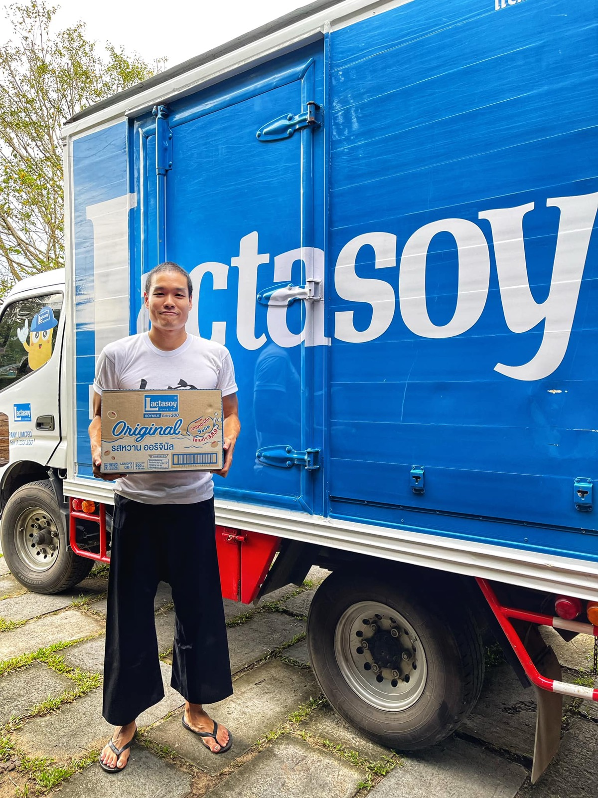

2022 · community · note
Lactasoy donates 3,000 milk boxes for students and Baan Ar-Jor staff

Original text in Thai
ขอบคุณ #แลคตาซอย สำหรับนม 50 ลัง 3,000 กล่อง ให้น้องๆ นักเรียน #รรหงษ์หยกบำรุง #รรบ้านไม้ขาว และ น้องๆที่ต้องการโอกาสนะครับ 😇❤️
ปล น้องๆพนักงานที่บ้านอาจ้อ ก็ต้องการนมเช่นกัน สาว่าเจ็บหนักกับงวดนี้ไปเยอะ 😅✨
#มูลนิธิบ้านอาจ้อ ❤️
#บ้านอาจ้อ 💕